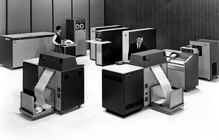
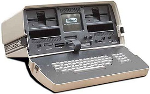

La tercera Generación 1964-1971: Circuitos integrados
En la década del 60, el desarrollo de los circuitos integrados fue la marca
de la tercera generación.Los transistores fueron minimizados y puestos en placas
de silicón, llamados semiconductores, los cuales incrementaron drásticamente la
velocidad y eficiencia de los computadores.
El Burroughs B-2500 fue uno de los primero y estos podían almacenar
millones de números. Surgen conceptos como memoria virtual, multiprogramación
y sistemas operacionales complejos. Ejemplos de esta época son el IBM 360 y el
BURROUGHS B-3500.

IBM 360
En 1960 existían cerca de 5.000 computadores en los EUA. Es de esta época
el término software. En 1964, la CSC, Computer Science Corporation, creada en
1959 con un capital de 100 dólares, se transformó en la primera compañía de
software con acciones negociadas en bolsa. El primer mini computador comercial
surgió en 1965, el PDP-5, dependiendo de su configuración y accesorios él podía
ser adquirido por US$ 18,000.00. Le siguió el PDP-8, de precio más competitivo.
Siguiendo su camino otras compañías lanzaron sus modelos, haciendo que a finales
de la década ya existieran cerca de 100.000 computadores esparcidos por el
mundo. En 1970 INTEL introdujo en el mercado un nuevo tipo de circuito integrado:
el microprocesador. El primero fue el 4004, de cuatro bits. A partir de ahí surgen
los microcomputadores.
Para muchos, la cuarta generación surge con los chips VLSI, de integración
a muy larga escala. Las cosas comienzan a desarrollarse con mayor rapidez y
frecuencia. En 1972 Bushnell lanza el vídeo juego Atari.
En 1975 Paul Allen y Bill Gates crean Microsoft y el primer software para
microcomputador: una adaptación BASIC para el ALTAIR. En 1976 Kildall establece
la Digital Research Incorporation, para vender el sistema operacional CP/M. En
1977 Jobs y Wozniak crean el microcomputador Apple, a Radio Shack el TRS-80 y
la Commodore el PET.
Osborne1
Fabricado en el año 1982. La caja, del tipo maleta con un peso de 11 Kg.,
albergaba 2 unidades de disquete de 5" ¼, un monitor de 5” en blanco y negro y un
teclado basculante (servía de tapa de la maleta) con dos bloques de teclas, uno
alfanumérico con los caracteres ASCII y otro numérico. Disponía de conectores para
un monitor externo, el sistema era alimentado por una batería propia recargable con
una autonomía de 5 horas, por una batería externa de automóvil o por un transformador
de corriente eléctrica alterna a continua. El sistema operativo era el CP/M desarrollada
por la Digital Corporation. El software suministrado incluía un Interpretador M BASIC
desarrollado por MICROSOFT, un Compilador BASIC desarrollado por la Compyler Systems, una hoja de cálculo
SUPERCALC y un procesador de texto denominado WORDSTAR
